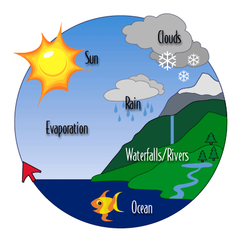
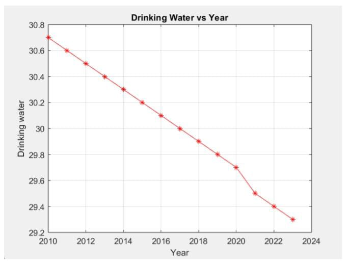
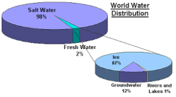
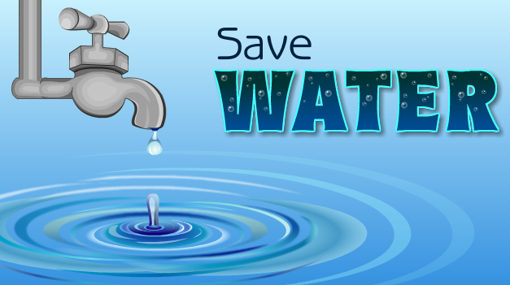

The water cycle is the continuous movement of water on, above, and below the surface of the Earth. It is a complex process that involves many different steps, but it can be summarized in four main stages: evaporation, condensation, precipitation, and collection.
Evaporation is the process by which water changes from a liquid to a gas. It occurs when water molecules absorb enough heat energy to escape from the surface of a liquid. Evaporation can happen from any body of water, such as oceans, lakes, rivers, and even puddles.
Condensation is the process by which water changes from a gas to a liquid. It occurs when water molecules cool down and lose their energy. When this happens, they come together to form clouds.
Precipitation is the process by which water falls from the sky. It can occur in many different forms, such as rain, snow, sleet, and hail. Precipitation occurs when water droplets in clouds become too heavy to stay suspended in the air.
Collection is the process by which water returns to the Earth's surface. It can happen in a number of ways, such as through runoff, infiltration
Climate change is affecting the water cycle in a number of ways. Here are some of the most important factors:
As the Earth's temperature rises, more water evaporates from the oceans and other bodies of water. This leads to more precipitation, but it also leads to more intense precipitation events, such as hurricanes and floods. Changes in precipitation patterns: Climate change is also causing changes in precipitation patterns. Some areas are becoming wetter, while others are becoming drier. This can lead to droughts in some areas and flooding in others. Melting glaciers and snowpack: Climate change is causing glaciers and snowpack to melt at an accelerated rate. This is reducing the amount of freshwater available for drinking, irrigation, and other uses.
Climate change is causing sea levels to rise. This is due to the melting of glaciers and ice sheets, as well as the expansion of seawater as it warms. Sea level rise is increasing the risk of coastal flooding and erosion. These changes in the water cycle are having a significant impact on human health and the environment. For example, droughts can lead to crop failure, which can lead to food shortages and malnutrition. Floods can damage homes and businesses, and they can also spread diseases. Sea level rise is forcing people to relocate from coastal areas, and it is also inundating wetlands and other important ecosystems.
Water is essential for life, but not all water is created equal. Only a small fraction of the Earth's water is fresh and available for human consumption. The rest is saltwater, which is undrinkable. Of the freshwater that is available, only a small portion is pure enough to drink without treatment.
The availability of pure drinking water is a major concern for many people around the world. According to the World Health Organization, one in three people lack access to safe drinking water. This is due to a number of factors, including pollution, climate change, and population growth.
The availability of pure drinking water has decreased over time. According to the United Nations, the amount of freshwater available per person has decreased by 60% since 1900. This is due to a number of factors, including:
The world's population has more than tripled since 1900. This means that there are more people competing for the same amount of water. Climate change: Climate change is causing more extreme weather events, such as droughts and floods. This is making it more difficult to access and manage water resources. Pollution: Pollution is contaminating water bodies and making water unsafe to drink. Impact on human health and the environment
The lack of access to pure drinking water can have a number of negative impacts on human health and the environment. People who drink contaminated water are at risk of contracting waterborne diseases, such as cholera, typhoid, and diarrhea. Waterborne diseases can be fatal, and they are a major cause of death in children under the age of five.
The lack of access to pure drinking water can also have a negative impact on the environment. When water is polluted, it can damage ecosystems and harm wildlife. It can also make it more difficult to grow food and produce energy.
The world's population has more than tripled since 1900. This means that there are more people competing for the same amount of water. Climate change: Climate change is causing more extreme weather events, such as droughts and floods. This is making it more difficult to access and manage water resources. Pollution: Pollution is contaminating water bodies and making water unsafe to drink. Impact on human health and the environment
Water is essential for life, but not all water is created equal. Only a small fraction of the Earth's water is fresh and available for human consumption. The rest is saltwater, which is undrinkable. Of the freshwater that is available, only a small portion is pure enough to drink without treatment.
The availability of pure drinking water is a major concern for many people around the world. According to the World Health Organization, one in three people lack access to safe drinking water. This is due to a number of factors, including pollution, climate change, and population growth.
Investing in water infrastructure: Governments and businesses need to invest in water infrastructure, such as dams, reservoirs, and treatment plants. This will help to ensure that everyone has access to safe drinking water.
Protecting water resources: We need to protect our water resources from pollution. This means reducing our reliance on fossil fuels, reducing our use of pesticides and herbicides, and properly disposing of waste.
Educating the public: We need to educate the public about the importance of water conservation and the dangers of water pollution. This will help to reduce our water consumption and protect our water resources.
The availability of pure drinking water is a critical issue for humanity. By taking steps to improve the availability of pure drinking water, we can protect human health, the environment, and the future of our planet.
Water pollution is the contamination of water bodies, such as lakes, rivers, oceans, and groundwater, with substances that make the water unsafe for drinking, swimming, recreational activities, or for supporting aquatic life. Water pollutants can come from a variety of sources, including:
Sewage and wastewater: This can contain harmful bacteria, viruses, and parasites.
Industrial waste: This can contain heavy metals, toxic chemicals, and other hazardous substances.
This can contain fertilizers, pesticides, and herbicides.
Oil spills: This can contaminate large areas of water and have a devastating impact on marine life.
Water pollution can have a number of negative impacts on human health and the environment. It can make water unsafe to drink, swim in, and fish in. It can also harm wildlife and damage ecosystems.
This is the most common waterborne disease and can be caused by bacteria, viruses, and parasites.
This is a serious bacterial infection that can cause severe diarrhea and dehydration.
This is another serious bacterial infection that can cause fever, headache, and muscle pain.
This is a viral infection that can cause paralysis, especially in children. Hepatitis A: This is a viral infection that can cause liver inflammation.
Some water pollutants, such as arsenic and chromium, are known to cause cancer. Impact on the environment
Water pollution can harm wildlife by poisoning them, destroying their habitats, and disrupting their food chains.
Water pollution can harm humans by destroying fresh water bodies.
Sewage and wastewater should be treated to remove harmful pollutants before it is discharged into water bodies.
Reducing industrial waste: Industries should reduce the amount of waste they discharge into water bodies and treat their waste before discharging it.
By conserving water, we can reduce the amount of wastewater that needs to be treated.